Citirea datelor și elemente epidemiologice
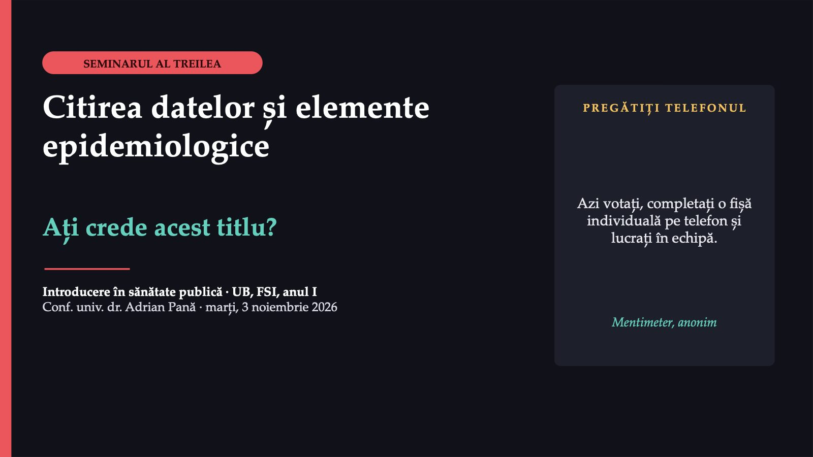
1 / 33Bine ați venit la al treilea seminar. Azi citim cifre reale și ne întrebăm, pentru fiecare titlu, dacă l-ați crede. Votați pe telefon, completați o fișă individuală și, în a doua parte, lucrați în echipă.
Ce ați adus de la curs
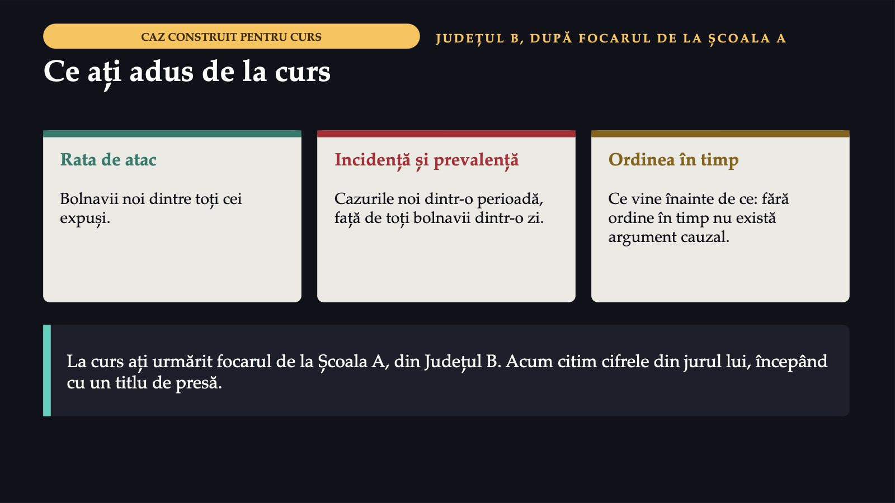
2 / 33Mai devreme, la curs, ați urmărit focarul de la Școala A, din Județul B. Este un caz construit pentru curs. Aveți de acolo trei lucruri: rata de atac, deosebirea dintre incidență și prevalență și ideea că ordinea în timp contează. Ne folosim de ele ca să citim cifrele de azi.
Prima oră în sală, a doua oră în echipă
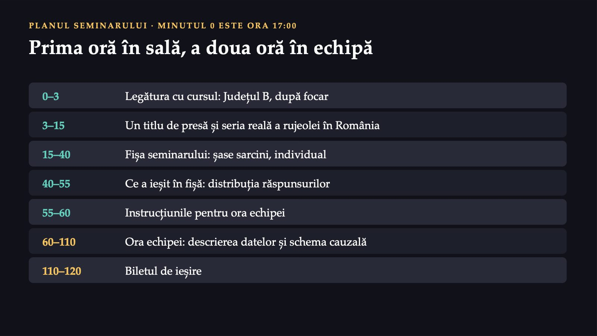
3 / 33Seminarul are două părți. În prima oră lucrăm împreună, în sală: un titlu de presă, apoi o fișă pe care o completați singuri, pe telefon, și o discuție despre ce a ieșit. În a doua oră lucrați în echipă, tot în sală. La sfârșit, biletul de ieșire.
Rujeola a explodat în România: de treizeci de ori mai multe cazuri într-un singur an!
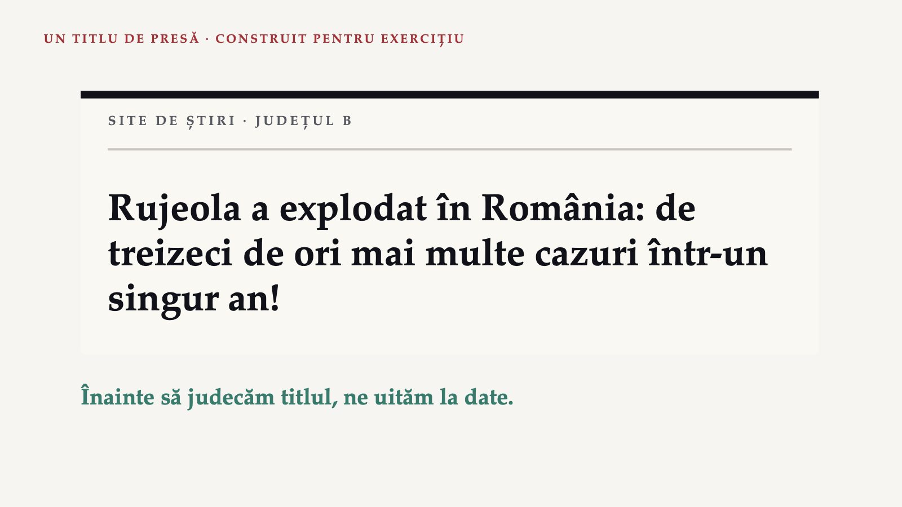
4 / 33După focarul de la Școala A, un site de știri din Județul B publică titlul: Rujeola a explodat în România, de treizeci de ori mai multe cazuri într-un singur an. Titlul este construit pentru exercițiu. Înainte să-l judecăm, ne uităm la date.
Cazurile de rujeolă raportate de România
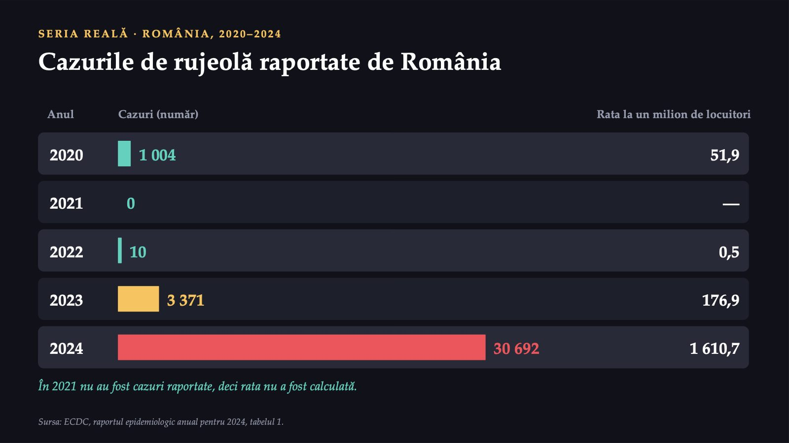
5 / 33Acestea sunt cazurile de rujeolă raportate de România la ECDC între 2020 și 2024: 1 004 în 2020, niciun caz în 2021, zece în 2022, 3 371 în 2023 și 30 692 în 2024. A doua coloană este rata la un milion de locuitori. Pentru 2021 rata nu a fost calculată, pentru că nu au existat cazuri raportate.
Ați crede acest titlu?
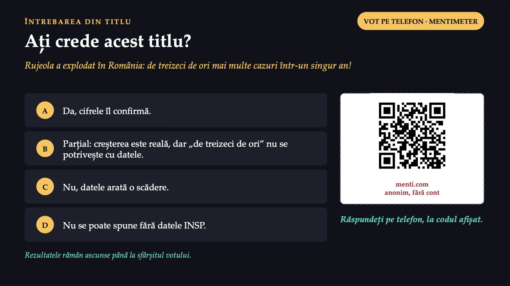
6 / 33Votați pe telefon, o singură variantă, la întrebarea: ați crede acest titlu? Variantele sunt: da, cifrele îl confirmă; parțial, creșterea este reală, dar de treizeci de ori nu se potrivește cu datele; nu, datele arată o scădere; nu se poate spune fără datele INSP.
Ce cifră din tabel vă susține alegerea?
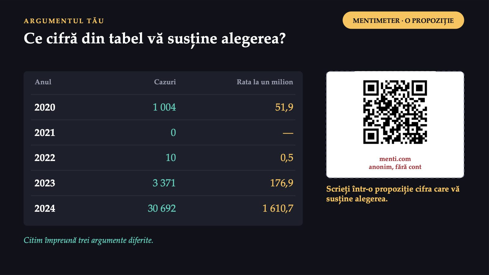
7 / 33Acum scrieți, pe telefon, într-o propoziție, ce cifră din tabel vă susține alegerea. Citesc apoi trei argumente diferite.
Ați crede acest titlu? Votați din nou
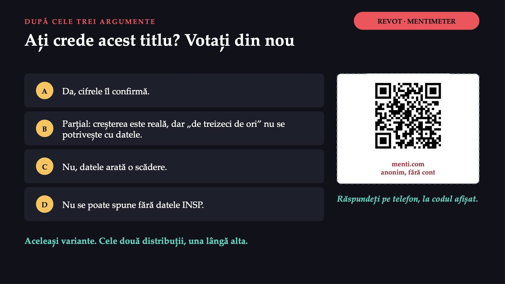
8 / 33Același vot, după ce ați auzit trei argumente. Comparăm distribuția de acum cu prima distribuție.
Trei mișcări, înainte de orice titlu
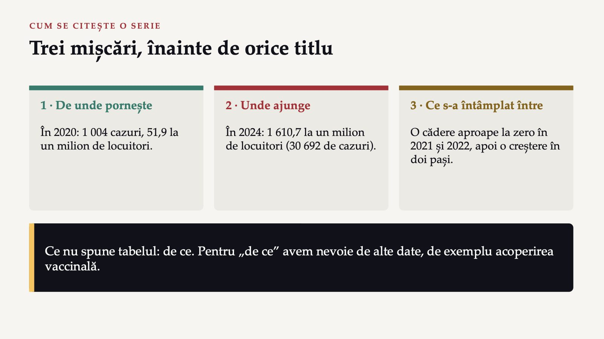
9 / 33Așa se citește o serie. Întâi, de unde pornește și unde ajunge. Apoi, ce s-a întâmplat între: o cădere aproape la zero în 2021 și 2022, apoi o creștere în doi pași. În sfârșit, ce nu spune tabelul: de ce. Pentru de ce avem nevoie de alte date, de exemplu acoperirea vaccinală.
Acoperirea vaccinală antirujeolică, 2020–2023
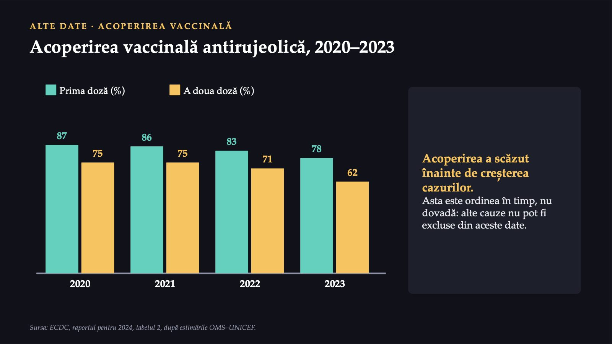
10 / 33Acoperirea vaccinală antirujeolică în România, din 2020 până în 2023, pentru prima și pentru a doua doză. Prima doză coboară de la 87 la 78 la sută, a doua de la 75 la 62. Scăderea acoperirii vine înainte de creșterea cazurilor. Este o ordine în timp, nu o dovadă: alte cauze nu pot fi excluse din aceste date.
9
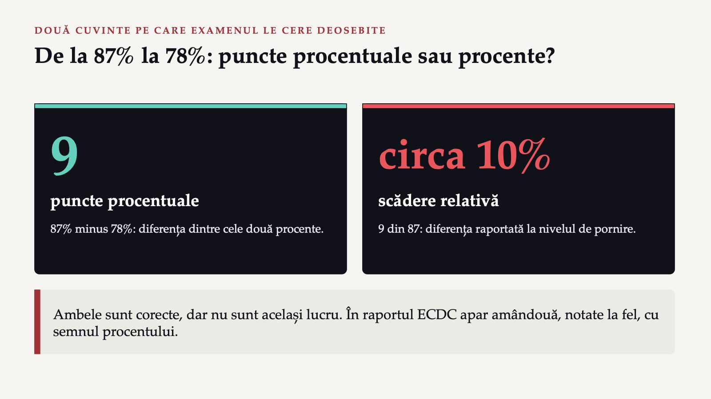
11 / 33Două cuvinte de vocabular, pe care examenul le cere deosebite. Când spuneți că acoperirea a scăzut de la 87 la 78 la sută, diferența este de 9 puncte procentuale. Când raportați această diferență la nivelul de pornire, 9 din 87, scăderea este relativă și este de circa 10 la sută. Ambele sunt corecte, dar nu sunt același lucru.
Șase sarcini, pe telefon, singuri
12 / 33Fișa are șase sarcini și se completează individual, în formularul fișei, în 25 de minute. Nu se notează. Rezolvările apar în formular după ce îl trimiteți. Le discutăm imediat după, pe distribuția răspunsurilor.
2023: 176,9
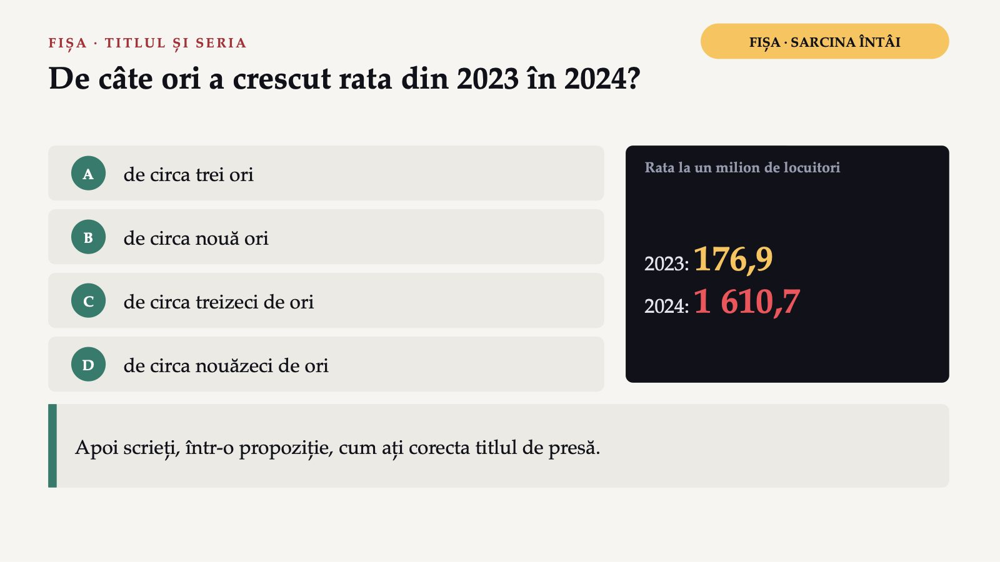
13 / 33Sarcina întâi. Pe tabelul cazurilor de rujeolă, de câte ori a crescut rata de notificare din 2023 în 2024? Alegeți: circa trei ori, circa nouă ori, circa treizeci de ori sau circa nouăzeci de ori. Apoi scrieți, într-o propoziție, cum ați corecta titlul de presă.
A doua doză, din 2020 în 2023: câte puncte și cât în procente?
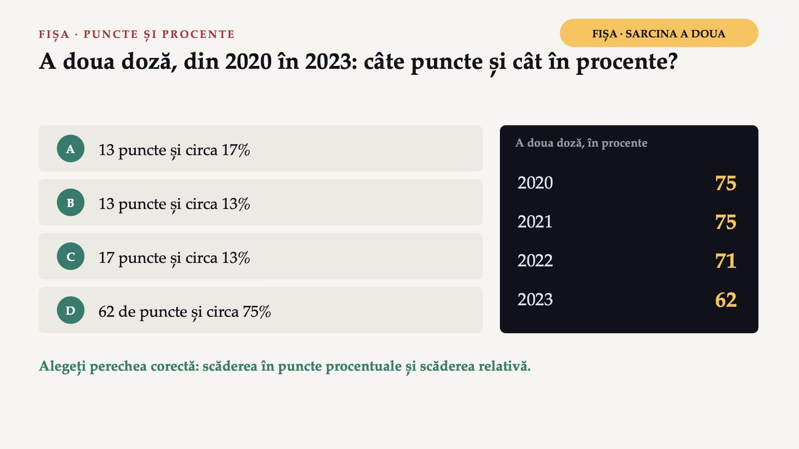
14 / 33Sarcina a doua. Pe tabelul acoperirii vaccinale, cu câte puncte procentuale a scăzut acoperirea cu a doua doză din 2020 în 2023 și cât este scăderea relativă? Alegeți perechea corectă.
40
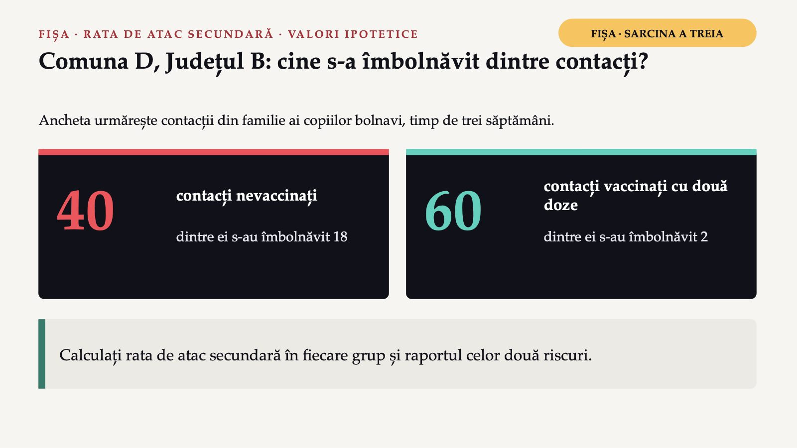
15 / 33Sarcina a treia, cu valori ipotetice. În comuna D din Județul B, ancheta urmărește contacții din familie ai copiilor bolnavi, timp de trei săptămâni. Dintre cei 40 de contacți nevaccinați, s-au îmbolnăvit 18. Dintre cei 60 de contacți vaccinați cu două doze, s-au îmbolnăvit 2. Calculați rata de atac secundară în fiecare grup și raportul celor două riscuri.
Care afirmație descrie o prevalență?
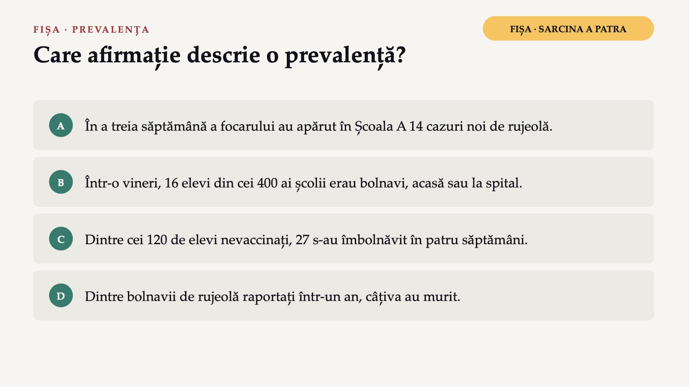
16 / 33Sarcina a patra. Care dintre aceste afirmații descrie o prevalență? Prima: în a treia săptămână a focarului au apărut în Școala A 14 cazuri noi de rujeolă. A doua: într-o vineri, 16 elevi din cei 400 ai școlii erau bolnavi, acasă sau la spital. A treia: dintre cei 120 de elevi nevaccinați, 27 s-au îmbolnăvit în patru săptămâni. A patra: dintre bolnavii de rujeolă raportați într-un an, câțiva au murit.
După serbarea orașului: ce studiu alegeți?
![FIȘA · SARCINA A CINCEA FIȘA · STUDIUL POTRIVIT ÎNTR-UN FOCAR După serbarea orașului: ce studiu alegeți? Cu mai multe tarabe cu mâncare, 35 de elevi din mai multe școli au diaree. Nu există o listă a celor care au fost la serbare. Se caută, în câteva zile, alimentul de vină. A Cohortă: elevii sunt urmăriți un an de acum înainte. B Caz–martor: bolnavii și elevi sănătoși sunt întrebați ce au mâncat. C Transversal: o privire pe toată populația orașului. D Experimental: unii elevi mănâncă din nou meniul.](diapozitive/LP03/017.jpg) 17 / 33
17 / 33Sarcina a cincea. După serbarea orașului, cu mai multe tarabe cu mâncare, 35 de elevi din mai multe școli au diaree. Nu există o listă a celor care au fost la serbare și nimeni nu știe cine a mâncat de la ce tarabă. Direcția de sănătate publică vrea să afle, în câteva zile, ce aliment este de vină. Ce tip de studiu alege?
Lanțul infecției pentru rujeolă
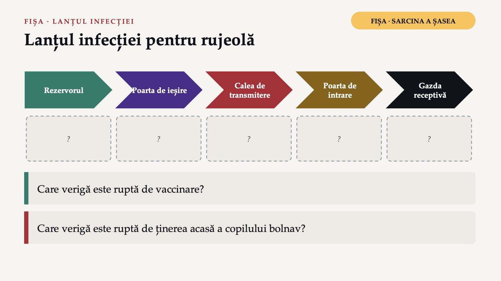
18 / 33Sarcina a șasea. Completați lanțul infecției pentru rujeolă: rezervorul, poarta de ieșire, calea de transmitere, poarta de intrare, gazda receptivă. Apoi numiți veriga pe care o rupe vaccinarea și veriga pe care o rupe ținerea acasă a copilului bolnav.
Unde s-au făcut cele mai multe greșeli?
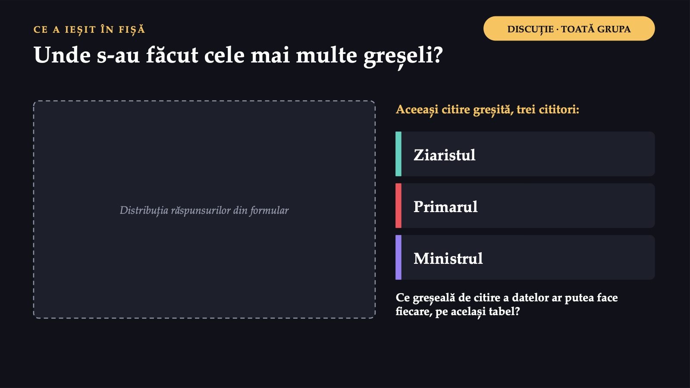
19 / 33Aici vedem distribuția răspunsurilor din formular și sarcina la care s-au făcut cele mai multe greșeli. Întrebarea pentru toată grupa: ce greșeală de citire a datelor ar putea face un ziarist, un primar sau un ministru, pe același tabel?
Răspunsul apare după ședință
Răspunsul apare după ședință
Răspunsul apare după ședință
Răspunsul apare după ședință
Răspunsul apare după ședință
Răspunsul apare după ședință
Răspunsul apare după ședință
Răspunsul apare după ședință
Răspunsul apare după ședință
Răspunsul apare după ședință
Răspunsul apare după ședință
Răspunsul apare după ședință
Ce construiți: descrierea datelor și schema cauzală
![ORA ECHIPEI · INSTRUCȚIUNI DUPĂ FIȘĂ Ce construiți: descrierea datelor și schema cauzală 1 Alegeți seria cea mai importantă pentru tema voastră: cel puțin trei ani, aceeași sursă, același indicator. 2 Descrieți-o în cel mult o sută de cuvinte, în cele trei mișcări. 3 Adăugați, dacă sursa o permite, o comparație: două regiuni, două grupe de vârstă, femei și bărbați. 4 Desenați schema: lanțul infecției sau lanțul cauzal. Cel puțin o săgeată are sursa lângă ea. 5 Scrieți o propoziție care începe cu „Datele nu ne permit să spunem că…”.](diapozitive/LP03/026.jpg) 26 / 33
26 / 33În ora echipei construiți al treilea produs al proiectului: descrierea datelor și schema cauzală. Alegeți seria cea mai importantă pentru tema voastră, descrieți-o în cele trei mișcări, adăugați o comparație dacă sursa o permite, desenați schema și încheiați cu o propoziție care începe cu: datele nu ne permit să spunem că.
Lanțul infecției sau lanțul cauzal?
![DOUĂ FORME ALE SCHEMEI Lanțul infecției sau lanțul cauzal? Boală transmisibilă: lanțul infecției Rezervorul Poarta de ieșire Calea de transmitere Poarta de intrare Gazda receptivă Sub fiecare verigă: o măsură care ar putea s-o rupă și o sursă care spune că măsura este folosită. Boală netransmisibilă sau factor de risc: lanțul cauzal Condiții de viață: venit, educație, locuință, mediu Comportamente și expuneri: fumat, alimentație, mișcare, alcool Factori biologici: tensiune, greutate, glicemie Boală, deces sau dizabilitate Fiecare săgeată merge de la ce vine înainte la ce vine după.](diapozitive/LP03/027.jpg) 27 / 33
27 / 33Produsul echipei de azi este o schemă, cu două forme. Pentru o boală transmisibilă desenați lanțul infecției, cu cele cinci verigi din sarcina a șasea, și sub fiecare verigă o măsură care ar putea s-o rupă. Pentru o boală netransmisibilă sau un factor de risc desenați lanțul cauzal, de la condițiile de viață la boală și la deces sau dizabilitate. Fiecare săgeată merge de la ce vine înainte la ce vine după.
Fumatul la adolescenți: de la preț la cancerul pulmonar
![UN LANȚ CAUZAL SCURT · VALORI IPOTETICE Fumatul la adolescenți: de la preț la cancerul pulmonar Prețul mic al țigărilor și vânzarea către minori Începerea fumatului înainte de 18 ani Dependența După zeci de ani: boli cardiovasculare și cancer pulmonar Prima săgeată: ipoteză; căutăm o sinteză. Fumat – cancer pulmonar: asociere puternică, cu relație doză–răspuns; sursa: studiul medicilor britanici. Prima regulă: o săgeată înseamnă „vine înainte și poate contribui la”, nu „este singura cauză”. A doua regulă: lângă cel puțin o săgeată, cât de sigură este, cu sursa. Fără sursă, este o ipoteză.](diapozitive/LP03/028.jpg) 28 / 33
28 / 33Un exemplu, cu valori ipotetice. Tema unei echipe: fumatul la adolescenți. Prețul mic al țigărilor și vânzarea către minori, apoi începerea fumatului înainte de 18 ani, apoi dependența, apoi, după zeci de ani, bolile cardiovasculare și cancerul pulmonar. Lângă prima săgeată, echipa scrie că este o ipoteză și caută o sinteză. Lângă săgeata dintre fumat și cancerul pulmonar scrie sursa. Două reguli: o săgeată înseamnă vine înainte și poate contribui la, nu este singura cauză; și o săgeată fără sursă este o ipoteză.
Două predări: una a echipei, una a fiecăruia
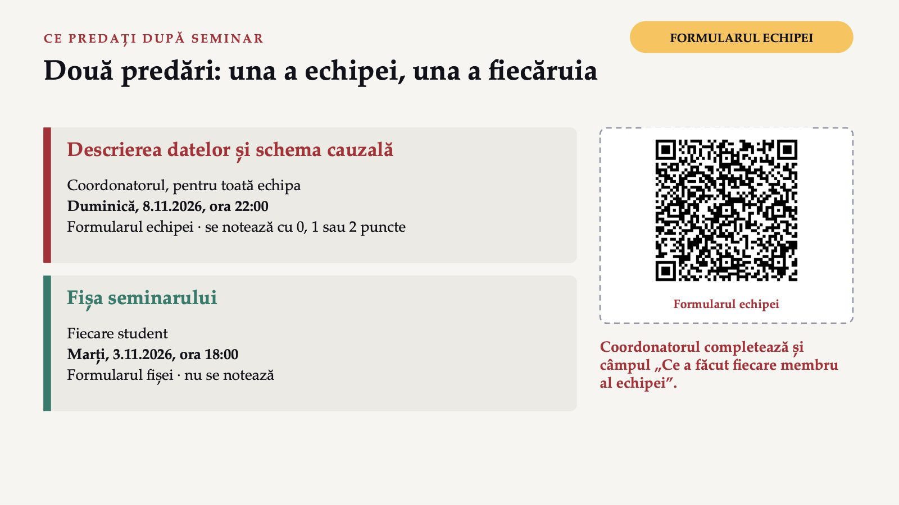
29 / 33Ce predați după acest seminar. Descrierea datelor și schema cauzală le trimite coordonatorul, pentru toată echipa, până duminică, 8 noiembrie, ora 22:00, în formularul echipei; se notează cu 0, 1 sau 2 puncte. Coordonatorul completează și câmpul obligatoriu despre ce a făcut fiecare membru. Fișa o trimite fiecare student, până azi la ora 18:00, în formularul fișei, și nu se notează.
Șapte verificări
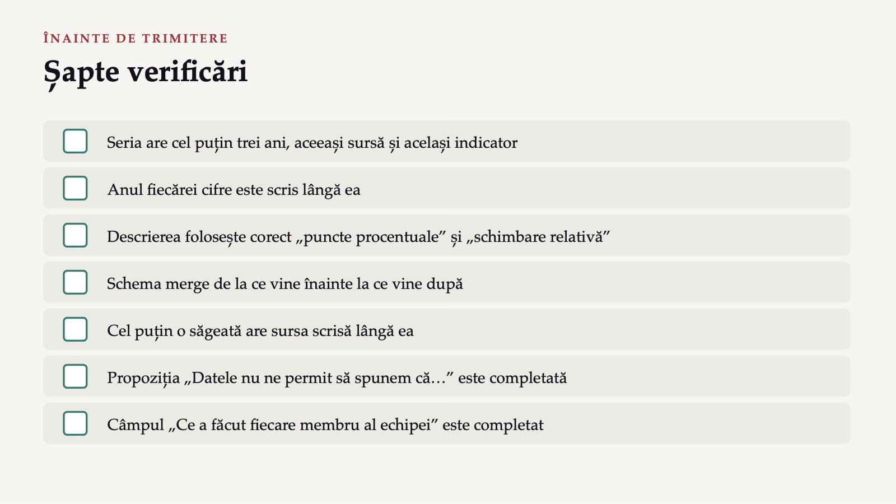
30 / 33Înainte să trimiteți, treceți prin cele șapte verificări: seria are cel puțin trei ani, aceeași sursă și același indicator; anul fiecărei cifre este scris lângă ea; descrierea folosește corect puncte procentuale și schimbare relativă; schema merge de la ce vine înainte la ce vine după; cel puțin o săgeată are sursa lângă ea; propoziția cu datele nu ne permit este completată; și câmpul despre contribuția fiecăruia este completat.
Ora echipei
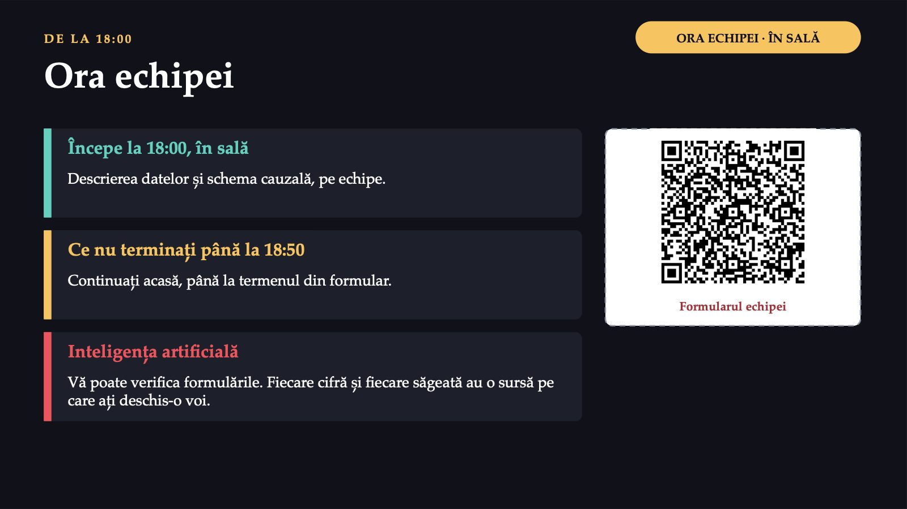
31 / 33Ora echipei începe acum, în sală. Ce nu terminați până la 18:50 continuați acasă, până la termenul din formular. Puteți folosi instrumentele de inteligență artificială ca să vă verificați formulările, dar fiecare cifră și fiecare săgeată trebuie să aibă o sursă pe care ați deschis-o voi.
Cinci reguli de citire, pentru orice titlu
![ÎNAPOI ÎN JUDEȚUL B Cinci reguli de citire, pentru orice titlu 1 O serie se descrie în trei mișcări: de unde pornește, unde ajunge, ce s-a întâmplat între. 2 O comparație între grupuri se face pe rate, nu pe numere de cazuri. 3 O diferență între două procente se spune în puncte procentuale; schimbarea față de nivelul de pornire, în procente. 4 Lanțul infecției are cinci verigi; o măsură de control rupe cel puțin una. 5 Lanțul cauzal arată ce precede ce; o săgeată fără ordine în timp nu este o cauză.](diapozitive/LP03/032.jpg) 32 / 33
32 / 33Înapoi în Județul B. Primarul, ziaristul și ministrul citesc același tabel. Cinci reguli vă protejează de titlul greșit: o serie se descrie în trei mișcări; comparațiile se fac pe rate, nu pe numere de cazuri; diferența dintre două procente se spune în puncte procentuale; lanțul infecției are cinci verigi, iar o măsură de control rupe cel puțin una; și o săgeată fără ordine în timp nu este o cauză.
Trei întrebări pentru final
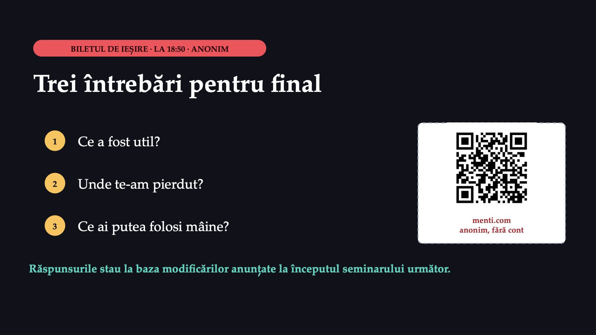
33 / 33Biletul de ieșire este anonim, pe Mentimeter, prin codul QR de pe ecran. Trei întrebări deschise: ce a fost util, unde v-am pierdut, ce ați putea folosi mâine. Dacă biletul are răspunsuri, la începutul seminarului următor veți vedea două lucruri schimbate după ele.
Săgeți sau spațiu: navigare · O: vedere de ansamblu · N: notele prezentatorului · F: ecran complet · Esc: închidere